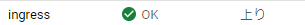
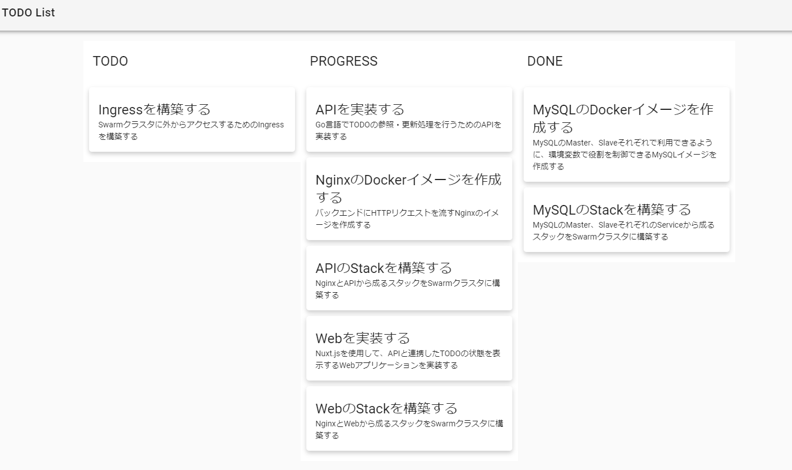

Docker/Kubernetes 実践コンテナ開発入門：書籍案内｜技術評論社
前回は、TODOAPIを構築しました。
今回も同じようにTODO Webアプリケーションを構築して、IngressでWebアプリケーションをインターネットに公開していきます。
6.5 TODO WebアプリケーションをGKE上に構築する
- todo-web.yaml
- 静的ファイル(assets)はNode.jsを通さずNginxから返す方法を取る
- nginxコンテナとwebコンテナでPodを構成
apiVersion: v1
kind: Service // Serviceリソース
metadata:
name: todoweb // Serviceリソースの名前はtodoweb
labels:
app: todoweb // Serviceリソースのラベルはapp: todoweb
spec: // Serviceリソースの仕様
selector:
app: todoweb // app: todowebラベルを持つPodが対象
ports:
- name: http
port: 80 // app: todowebラベルのhttpポート80を持つPodが対象。またService自身のポートは80
type: NodePort // 指定されたレンジのポートを割り当て、Nodeはそのポートへの通信をServiceに割り当てる。
---
apiVersion: apps/v1
kind: Deployment // Deploymentリソース
metadata:
name: todoweb // Deploymentリソースの名前はtodoweb
labels:
name: todoweb // Deploymentリソースのラベルはname: todoweb
spec:
replicas: 2 // Podのレプリカは2
selector:
matchLabels:
app: todoweb // 対象はapp: todowebラベルを持つPod
template: // Pod Template
metadata:
labels:
app: todoweb // Podのラベルはapp: todoweb
spec:
volumes: # ← ①
- name: assets // assetsという名称のVolumeを作成
emptyDir: {} // Pod単位に割り当てられる仮想Volumeを作成。Podが削除されると削除される。
containers: // コンテナ定義
- name: nginx // コンテナ名
image: gihyodocker/nginx-nuxt:latest // コンテナイメージ
imagePullPolicy: Always // ローカルにキャッシュイメージがあればそれを使用。なければイメージをダウンロードしてくる
ports:
- containerPort: 80 // コンテナのポート。同一Pod内で衝突しないように。
env:
- name: WORKER_PROCESSES
value: "2"
- name: WORKER_CONNECTIONS
value: "1024"
- name: LOG_STDOUT
value: "true"
- name: BACKEND_HOST
value: "localhost:3000" // 同じPod内のwebコンテナを指している
volumeMounts: # ← ②
- mountPath: /var/www/_nuxt // マウントするコンテナのパスを指定
name: assets // 仮想Volumeのassetsでマウント
- name: web
image: gihyodocker/todoweb:latest
imagePullPolicy: Always
lifecycle: # ← ③
postStart:
exec:
command:
- cp
- -R
- /todoweb/.nuxt/dist
- /
ports:
- containerPort: 3000
env:
- name: TODO_API_URL
value: http://todoapi // Service名をURLにしたもの
volumeMounts: # ← ④
- mountPath: /dist
name: assets
- todo-webをデプロイ
$ kubectl apply -f todo-web.yaml
service/todoweb created
deployment.apps/todoweb created
-
仮想Volumeによってコンテナ間のディレクトリ共有が可能に。
-
webコンテナのassetsファイルをNginxコンテナにコピーする必要がある。 => Lifecycleイベントを利用
-
Lifecycleイベント
- コンテナの開始時や終了時のタイミングで任意のコマンドを実行するための仕組み
-
postStartを使ってwebコンテナの開始時に、仮想Volumeにassetsファイルをコピーする
-
postStart.exec.commandで次のコマンドを実行しており、/distディレクトリにassetsファイルがコピーされる
@web $ cp -R /todoweb/.nuxt/dist /
- /distディレクトリはassetsボリュームに共有される
- assetsボリュームをnginxコンテナもマウントしているため、/var/www/_nuxt/にassetsが配置される
6.6 IngressでWebアプリケーションをインターネットに公開する
-
Ingressを利用してWebアプリケーションをインターネットに公開する
-
GCPではCloud Load Balancingが利用される
-
ingress.yaml
apiVersion: extensions/v1beta1
kind: Ingress // Ingressリソース
metadata:
name: ingress // Ingerssリソースの名前はingress
spec:
rules: // Ingressが受けたリクエストのパス毎にバックエンドに転送。全てをtodowebに転送
- http:
paths:
- path: /*
backend:
serviceName: todoweb
servicePort: 80
- ingressをデプロイ
$ kubectl apply -f ingress.yaml
ingress.extensions/ingress created
- Ingressが作成されると、1分程でグローバルIPアドレスが振られる
$ kubectl get ingress
NAME HOSTS ADDRESS PORTS AGE
ingress * 35.xxx.xxx.xx 80 4m52s
- そこから完全に準備が整うまで数分かかる

- ステータスがOKになったら準備完了

- Ingressで公開されたグローバルIPアドレスにアドレスにアクセスするとTODOアプリケーションをみることができます。

- Dockerのときはスタイルが崩れちゃっていましたが今回はうまくいったようです！！
今日の学び
- IngressでインターネットからのリクエストをServiceに委譲するためにServiceはNodePortで公開する。
- 仮想Volumeを作ると、Pod内でそれぞれのコンテナから好きなパスでアクセスできる